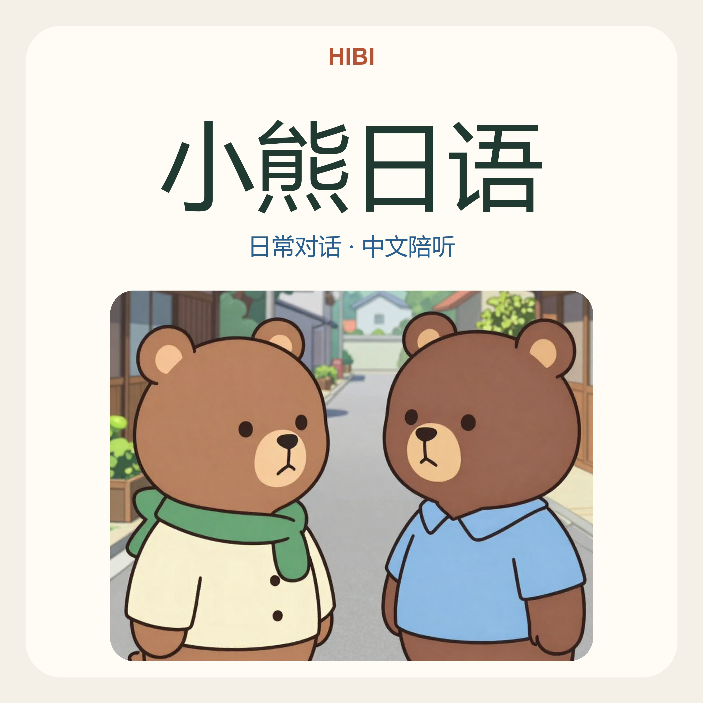
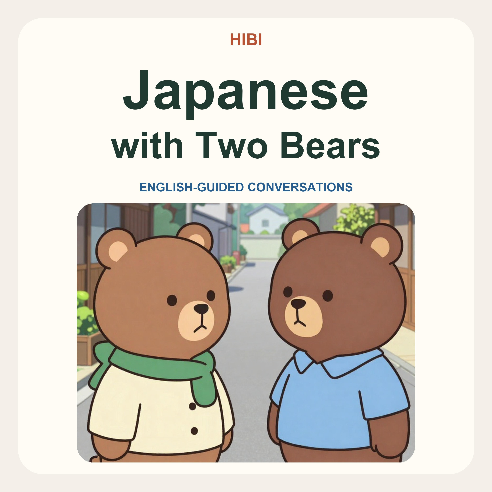

从自然对话开始，听懂一个表达，再试着说出来。每集约五分钟，包含讲解、替换练习、跟读与回答。

两只小熊的日语日常。中文讲解、自然对话，每集一个表达，配合跟读和回答练习。

Learn one useful Japanese expression through a bear conversation, with English explanations, practice gaps and a chance to answer.